附录B 资源
·B.1必备网站
·B.2延伸学习参考
·B.3投资相关网站
·B.4夏普比率
·B.5波动性的计算及专业风险分析案例
·B.6基本面分析精要
·B.7辅助软件及互联网技术分析网站
·B.8杠杆空间组合模型（Leverage Space Portfolio Model）
B.1 必备网站
约翰·迈吉的联系方式
约翰·迈吉技术分析：德尔菲期权研究公司（jmta：：dor）
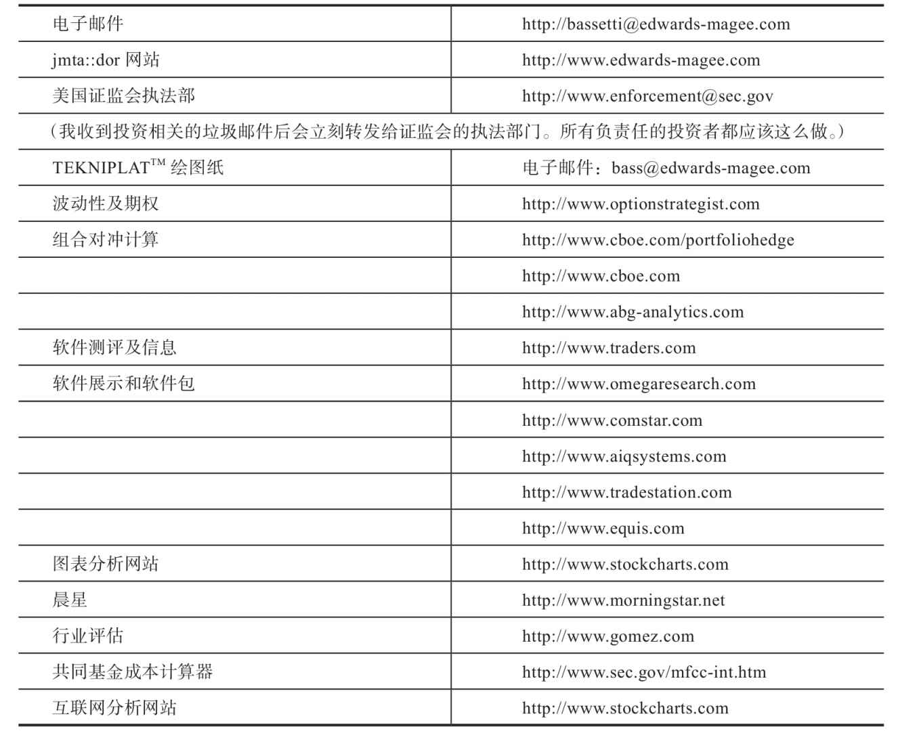
B.2 延伸学习参考
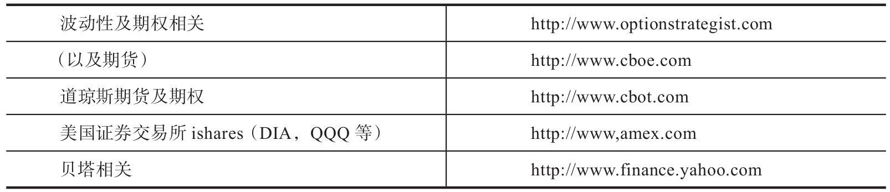
B.2.1 关于风险
《风险价值》（Value at Risk），菲利普·乔瑞（Phillipe Jorion）著，纽约：John Wiley&Sons出版社，1996年
《与天为敌》（Against the Gods） [1] ，彼得·伯恩斯坦（Peter Bernstein），纽约：John Wiley&Sons出版社，1996年
风险管理101（软件），Zoologic公司，1997年
第42章也介绍了风险相关内容
B.2.2 关于K线图
《日本蜡烛图技术》（Japanese Candlestick Charting Techniques），史蒂夫·尼森（Steve Nison），纽约：NYIF出版社，1991年
《日本蜡烛图技术新解》（Beyond Candlesticks） [2] ，史蒂夫·尼森，纽约：John Wiley&Sons出版社，1994年
B.2.3 关于期货
《期货交易技术分析》（Schwager on Futures，Technical Analysis），杰克·施瓦格（Jack Schwager），纽约：John Wiley&Sons出版社，1996年（参考中列出了施瓦格的其他著作）
B.2.4 关于组合管理
《投资组合管理期刊》（The Journal of Portfolio Management）
风险管理101（软件），Zoologic公司，1997年
第42章 本附录B.5
本附录B.8
B.3 投资相关网站
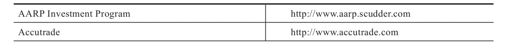
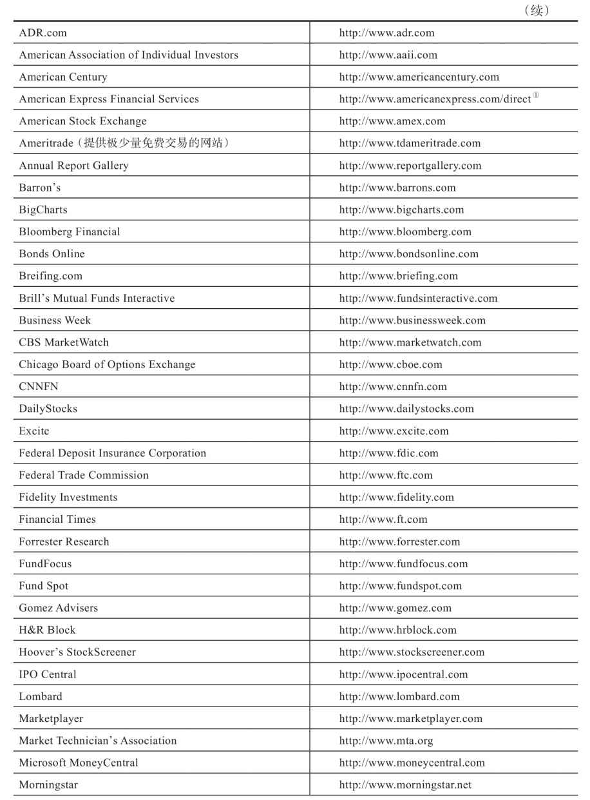
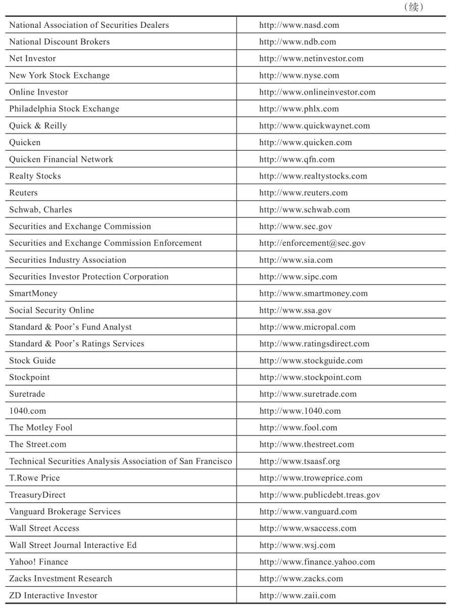
①美国运通现为一些账户提供免费交易服务。
经纪商
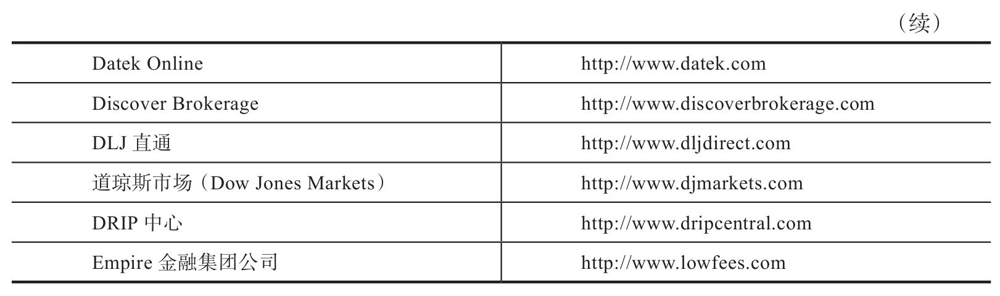
B.4 夏普比率
虽然本公式仍有缺陷，但不会影响读者理解其意义。但理解并不表示认同。夏普比率的公式如下：
SR＝（E-I）/sd
式中，E代表预期回报，I代表无风险利率，sd代表回报的标准差。
这个死板的公式对于实盘交易的投资者来说并没什么用处。它认定回报的波动性（由sd衡量）等于风险（一个普遍的学术问题）。它没有衡量交易中最重要的一个因素，即最大回撤，或者说是盈亏不可避免的波动性。具体来说，它没有考虑最大预期损失或经历过的最大损失、极高点到极低点的落差以及这些事件的发生顺序。
B.5 波动性的计算
要计算一个组合或一个工具的波动性，我们首先应该确定每次回报之间的偏差值以及平均回报。然后求每个差值的平方数，把得到的数字加总。最后，将加总得到的数字除以回报次数减一。这个计算得到的结果叫作方差。我们再将方差开平方，就得到了波动性。我们可以用一个公式来表示上述步骤（见图B-1）。
第1步：计算平均回报
第2步：计算每次回报的偏差值
第3步：求每个偏差值的平方数
第4步：将各平方数加总
第5步：将加总数除以回报期数减一
第6步：开平方
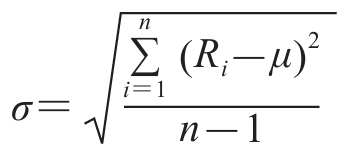
图B-1 波动率公式。这是用于计算波动率的公式。①计算平均回报；②每个回报的离差；③取每期离差的平方；④将其加总求和；⑤将和除以期数减1，求得方差；⑥取平方根
请注意，这是你在对资产组合拥有一定经验数据后使用的公式。在现代资产组合理论中，有一套更复杂的计算程序。
B.6 基本面分析的核心
摘自《约翰·迈吉市场评论》，1984年12月15日
作者：理查德·麦克德莫特（Richard McDermott）
艾略特波浪理论：介绍与评论
本周，我们很高兴地参加了纽约技术分析师协会（Market Technicians Association of New York）的12月会议。
长期读者们想必记得，纽约技术分析师协会曾在1978年向约翰·迈吉颁发了“年度人物奖”。当年的发言人是罗伯特·普莱切特，他是一名根据拉尔夫·纳尔逊·艾略特（R.N.Elliott）的股市理论提供投资建议的分析师，是“艾略特波浪理论家”（The Elliott Wave Theorist）的出版者。
普莱切特对技术分析自身的评论尤其重要。实际上，艾略特波浪理论不过是对股价走势的“记录”，这些记录层层累积起来，直到整体的长线走势呈现出来；简而言之，这是单纯的技术分析。普莱切特对基本面分析的定义和评论还包括以下几点。
（1）首先，我们给“技术数据”和“基本面数据”分别下个定义。……技术数据是由被研究市场的行为所产生的数据。
（2）基本面分析的主要问题是，所用的指标与市场自身脱节。分析师假设外部事件和市场走势之间存在因果关系，这一理念基本上是错误的。但同样重要却少有人认识到的是，基本面分析几乎总是要求先对基本面数据自身进行预测，然后才能对市场得出结论。然后，分析师必须再就那些预测的事件将怎样影响市场得出结论！而技术分析师只要完成一个步骤，因此拥有显著的优势，即无须预测自己的指标。
（3）更糟糕的是，就连基本面分析师的第二个步骤也可能缺乏扎实的依据。……基本面分析最常见的应用是，测算企业当年及下一年的盈利状况，然后在此基础上推荐股票。……记录显示这样做的效果很差，《巴伦周刊》在6月4日的文章中指出，道琼斯工业平均指数31只成分股任何过去一年盈利测算的平均误差率达到18%，而对未来一年盈利预测的平均误差率达到54%。然而，最薄弱的一环是依据假设正确的盈利测算结果来选股。根据《巴伦周刊》同一篇文章中的数据表，买入道琼斯工业平均指数中盈利预测最佳的10只股票后，10年累计回报率为40.5%，而如果选择盈利预测最差的10只，则同期回报率可达142.5%。
我们很欣赏普莱切特对一种技术分析方法的精辟阐释。我们完全赞同他对基本面分析的看法。
B.7 辅助软件及互联网技术分析网站
洞穴人争抢资源靠的是牙齿和爪子。当某个聪明人拾起了一根树枝时，现代战争的性质就改变了。后来，又有人发现了炮弹的威力，开始用石头。天真傲慢的交易者只会嘲笑威科夫（Wyckoff）使用的图表。太平洋海岸期权交易所（Pacific Coast Options Exchange）里的做市商对拿着打印件来交易的布莱尔·赫尔（Blair Hull）不屑一顾。当木制球拍还占主流时，壁球运动员憎恨那些带金属球拍或合金球拍来比赛的人。
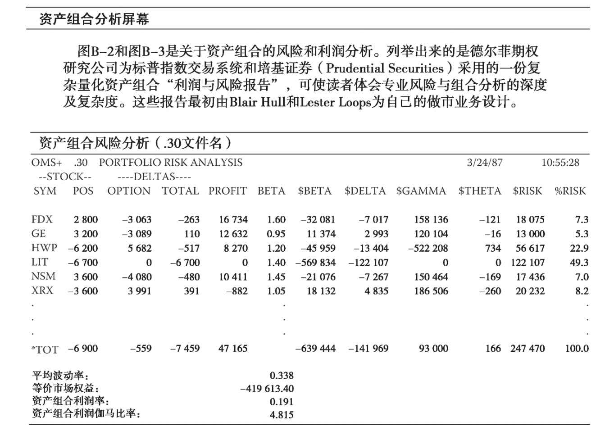
图B-2 风险分析
关键词：资产组合风险报告。“资产组合风险分析”屏幕列出了资产组合的德尔塔、利润、各类风险指标，而组合中的股票和期权可由用户自己选定。
屏幕上显示的信息是：
STOCK SYM：股票代号；
STOCK POS：股票仓位，或拥有的股票数量；
DELTAS TOTAL：股票德尔塔和期权德尔塔的合计数；
BETA：每个股票（待实施）的贝塔；
$BETA：大市波动所导致的风险金额（美元），$Beta＝（Delta×股价）×Beta；
$DELT：基于仓位不平衡的年化风险值，$Delta＝（总德尔塔×股价）×波动率；
$GAM：基于仓位曲率的年化风险值。正的$Gamma表示反向比率价差，负的$Gamma表示垂直仓位。$Gamma＝总Gamma×（股价×波动率）；
$THETA：如果股价维持不变，则仓位一天中理论上可能增加或减少的金额（美元）；
$RISK：基于$Delta和$Gamma的仓位年化标准差；
%RISK：每个仓位的资产组合风险占比；
TOT：以上每个类别的总数；
平均波动率：股票的平均波动率；
等价市场权益：每只股票的价格乘以其总德尔塔，然后加总求和；
资产组合利润率：资产组合的总利润除以总风险；
资产组合利润伽马比率：资产组合的总利润除以$Gamma平方。
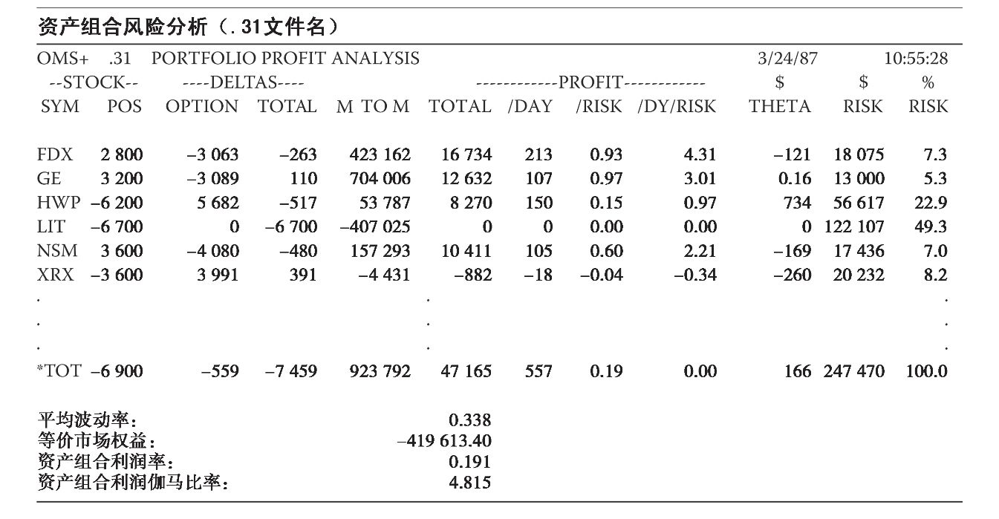
图B-3 利润分析
关键词：资产组合利润报告。“资产组合风险分析”屏幕列出了资产组合的德尔塔、利润、各类利润指标，而组合中的股票和期权可由用户自己选定。
屏幕上显示的信息是：
STOCK SYM：股票代号；
STOCK POS：股票仓位，或拥有的股票数量；
DELTAS OPTION：期权仓位的总德尔塔；
DELTAS TOTAL：股票德尔塔和期权德尔塔的合计数；
M TO M：盯市，即股票和期权仓位基于市场价格的总金额；
PROFIT TOTAL：理论上每个仓位的总利润；
PROFIT/DAY：理论利润除以到期天数；
PROFIT/RISK：理论利润对风险的比率；
PROFIT/DY/RISK：每天的理论利润对风险的比率；
$THETA：如果股价维持不变，则仓位一天中理论上可能增加或减少的金额（美元）；
$RISK：基于$Delta和$Gamma的仓位年化标准差；
%RISK：每个仓位的资产组合风险占比；
TOT：以上每个类别的总数；
平均波动率：股票的平均波动率；
等价市场权益：每只股票的价格乘以其总德尔塔，然后加总求和；
资产组合利润率：资产组合的总利润除以总风险；
资产组合利润伽马比率：资产组合的总利润除以$Gamma平方。
现在人们的心态已经改变。最后一个拿起新武器的人和死人没什么分别了。图表证明了自己的有效性，赫尔根据布莱克-斯科尔斯期权定价模型绘制出的打印件再也不是人们的笑料了。那些失败者很快发觉自己需要新武器。现在，我想和大家分享一些我最喜欢用的“武器”：一些软件和互联网网站。这并非是一份详尽无遗的清单。你会发现，很多软件和网站没有在下文中出现，但这并不代表我认为它们不好用。
我认为，这3套桌面软件包可以满足技术分析师的所有需要：AIQ交易大师专业版（http://www.aiqsystems.com ）、Metastock 9.0版（http://www.equis.com ）和Trade-Station 2000i及其后续版本（http://www.tradestation.com ）。本书除了迈吉手工绘制的图表外，也囊括了来自以上软件的大量图表。这些软件都能满足技术分析的基本需求，能够基于现有的数据和组合作图。我之前说过，图表分析师需要掌握的就是在图表上画线的能力……还有读懂直线图、K线图等的能力。分析师很快会被软件内丰富多彩的功能吸引，然后不断充实自己的分析，使之更为强大。当分析师在软件里看到一个超卖分析工具时，他也许会感到困惑，想：“我需要这个做什么？我在柱状图上已经看到了这个现象。”但他会发现自己还是想要再了解一些关于%R的信息。如果拉里·威廉斯觉得这个工具有用，那么它一定有自己的价值。
B.7.1 AIQ交易大师专业版
在AIQ的软件中，用户可以看到屏幕上的控制栏和以不同颜色编码的滚动指标栏。这些指标信息都会综合体现在一个指标晴雨表里。数据管理简单顺畅，且用户可以通过一个系统模块创建并测试自己的交易策略。该软件还为用户提供大量研究报告，并为交易者提供实时提醒功能。组合经理模块不仅能帮助投资者管理组合，还可以管理止损位。使用该软件时，你会感觉有一名交易大师在背后助你分析市况。
B.7.2 Metastock 9.0
该软件集合了大量有用的工具和指标。“系统专家”会随时出现，帮助用户了解并探索系统功能。系统专家还可以做出买卖建议。点数图工具箱也是非常实用的功能。该软件还有一个强大的功能，即允许用户创建并测试交易系统，并辅以详尽的数据分析。该软件还支持各类扩展，比如说Slouson’s Powerstrike（一种寻找关键支撑/阻力区的量化工具）。
B.7.3 Tradestation 2000i和Tradestation 8
Tradestation 8是一个在线实时交易软件。使用该软件，用户可通过Tradestation经纪公司的账户进行交易。Tradestation 2000i是该软件的一个独立版本。该软件的优势在于，专业和半专业的投资者可以将软件上的交易计划与经纪账户连接起来。2000i版本要求用户建立自己的本地数据库，而Tradestation 8则可以即时提供数据。对于懒人（比如我）来说，这是个极具吸引力的功能。系统构建和测试一直以来都是Tradestation的强项。通过“EasyLanguage”，用户可以对任何系统进行调整，然后在Tradestation的交易者社区和其他交易者分享。这个社区已经贡献了许多交易系统和交易概念。
B.7.4 互联网网站：prophet（http://www.thinkorswim.com ）
更懒或风格更随意的投资者可以借助http://www.prophet.net 来交易（现已改名为thinkorswim.com）。这是一个技术分析网站，其免费功能足以满足普通图表派投资者的需要。该网站提供大量互动性图表和组合报告，投资者可以省下不少费用。马克·吐温说过，省一分就是赚一分。因为你省下的每一分钱都可以用于再投资。此外，该网站还有社区分享功能。投资者也无须维护本地数据库。该网站还会不定期地发布本书编辑撰写的市场评论和分析文章。总的来说，http://www.prophet.net 有理由继续摘得《巴伦周刊》《福布斯》及《技术分析》杂志的奖项。现在http://www.tdameritrade.com 的用户可以享受Prophet制图服务。
B.7.5 互联网网站：http://www.stockcharts.com
该网站同样赢得过《福布斯》和《技术分析》杂志的奖项。此外，http://www.stockcharts.com 还有一个额外的功能：支持点数图的制图。我没有特别介绍点数图，但对于有耐心的投资者来说，这也是一个重要的技术方法。你可以在该网站上找到所有其他功能，包括K线图、直线图等。著名分析师约翰·墨菲（John Murphy）几乎在该网站上进行一切电子分析。该网站还提供“偷看”功能，让用户看到其他交易者正在做什么。
B.7.6 小结
知识就是力量，但更重要的是知道去哪里寻找知识。如果投资者想要与时俱进，及时了解类似网站的资讯，可以查阅《巴伦周刊》和《福布斯》的年度评估报告，或其他金融报刊不时更新的互联网资源评估结果。
B.8 杠杆空间组合模型
约翰·布林格（John Bollinger）和其他很多著名的投资者都认为，拉尔夫·文斯（Ralph Vince）的《组合数学手册》是该领域最重要的著作。文斯先生曾在一篇短文中简要介绍过这本书的概念。我摘录如下：
1884年，查尔斯·亨利·道开始构建一系列指数，后来人们将这些指数称为道琼斯指数。关于道琼斯指数走势的相关理论，也就是后来的道氏理论，成了现代技术分析的基石。
2011年，道琼斯指数与LSP公司共同推出了道琼斯LSP指数。那么，在有关现代技术分析的这本著作中介绍最优f值（Optimal f）以及杠杆空间组合模型就非常合适了。
让我们考虑一个有两种结果的交易情形。一种结果是赚2个单位，另一种结果是亏1个单位。然后我们画一个0到1的范围，0表示风险为0，1表示风险为损失全部本金。我们将0到1之间的价值看作风险本金的分数（f），也可以称为我们的杠杆。因此，在任何一笔交易中，或任何一段给定的时间里，我们都会用某个分数的本金来冒险。所以，不论我们是否觉察到，在进行任何一笔交易时，或任何一段给定的时间里，我们都被赋予了一个f值。
如果我们进一步考虑这个有2种结果的交易情形（类似于扔硬币），就能画出图B-4。这张图表示，以不同的f值进行一笔交易，基于交易的本金（以初始本金的倍数表示），我们能得到的预期收益是多少。
如果我们的交易不只1笔，或交易的时间段不只1段，我们在下一笔交易或下一个时间段的投资金额根据之前的盈亏金额而变，那么图上的直线就会弯曲，且曲线的峰值会落在某个特定的点上。随着某一个预期收益为正的交易或时间段的增长得到最大化，峰值由1.0逐渐右移。所以，多次交易或多个时间段之后，该顶点会落在特定的点上。基于扔硬币这个赚2赔1的例子，该顶点落在0.25（如图B-5所示）。
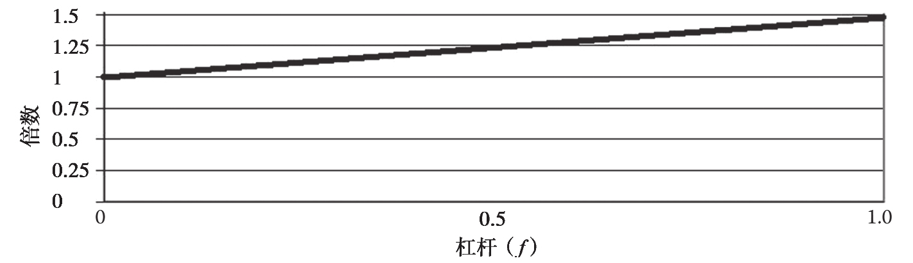
图B-4 以赚2赔1的扔硬币结果为例，该图描绘了初始本金的预期倍数
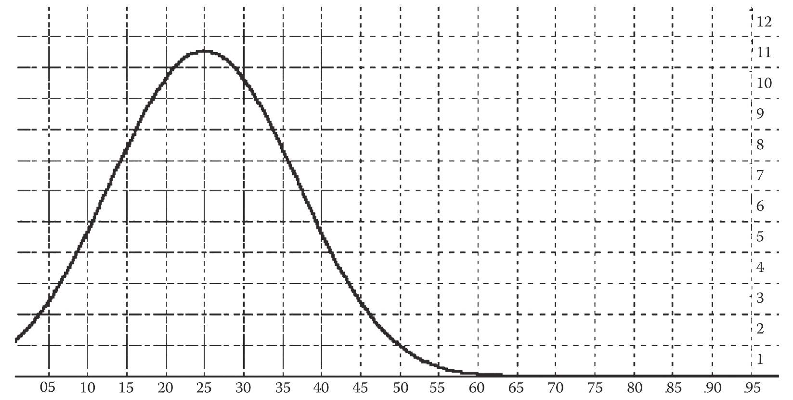
图B-5 2∶1掷硬币游戏40轮后初始本金的预期增长倍数
对于任何给定的f值，曲线的高点可由如下最优f值公式算出：
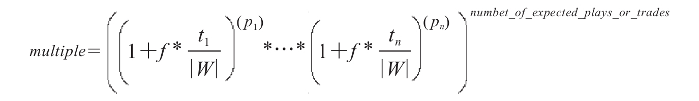
因此，对于n笔交易或n段时期，在给定f值的情况下，我们可以算出本金的增长倍数，计算的依据是每笔交易或每段时期的结果（t）、得到该结果的概率（p）、最悲观的结果（w，即所有t值中的最小一个）。我们将得到的结果提高到希望的指数级，以计算我们的预期增幅，从而得到n笔交易或n段时期后我们初始可交易本金的增长倍数。
这代表你在拿出本金的一部分（f）冒风险的情况下，预期可获得的利润对初始本金的倍数。
请注意这与凯利公式（Kelly Criterion）不同，后者给出的峰值是“杠杆系数”，即一个处于0和无穷大之间的值，表示加多少倍杠杆，而不是像最优f值公式那样表示只用本金的多少部分（0和1之间的值）去冒风险。在特定情况下，这两种方法会给出同样的峰值，即杠杆系数等于最优冒险分数，比如本例中的2∶1丢硬币，但此类情况并不多见。如果假设凯利公式的结果是预期增长最优的本金冒险分数，那么你可能犯下大错。凯利公式不会给出一个预期增长最优的本金冒险分数，而总是生成预期增长最优的杠杆系数。这两者之间可以相互换算，但最优f值公式的真正优点在于给出了此曲线的高度，它表示为初始本金的预期损益倍数（凯利公式不能给出），我们可在此基础上展开研究。
例如，在峰值的左边有一个点，曲线在此处由上凹转变为下凹。纵轴是预期增长倍数，横轴是风险值；在这个拐点处，增长边际增速快于风险边际增速的情况发生反转。
在f＝0.1和f＝0.4这两处，曲线的高度是一样的，但后者的风险是前者的4倍！显然，从来没有理由选择曲线峰值右侧的点。
我们说过，无论你是否承认，你在任何时候的仓位都对应于这条曲线上的某一点。请注意图B-5中f＝0.5的点对应的倍数为1.0。若你冒比这点更大的风险，则你的增长倍数会低于1.0，因此你在这个水平上继续交易得越多，你破产的概率就越大，因为你是在用小于1的倍数去乘初始本金。
最重要的是，上述情况不存在借款，完全是用自有资金交易。但若你在这些（非常有利的）条件下按这一水平的“杠杆”持续交易，则你肯定会破产。
当在不同市场上或以不同方式发生多笔交易时，图B-5所示的曲线（它是一个2维空间曲线，因为交易对象只有一个）就会变成N＋1维空间（设同时交易的对象有N个）。如果我们考虑同时交易2只股票，或者同时进行2个2∶1掷硬币游戏，那么我们会处于图B-6所示的N＋1维空间中（在此例中，为2＋1＝3维）。
这个N＋1维空间被称为“杠杆空间”，在其基础上构建的资产组合被称为“杠杆空间资产组合”（缩写为LSP组合）。
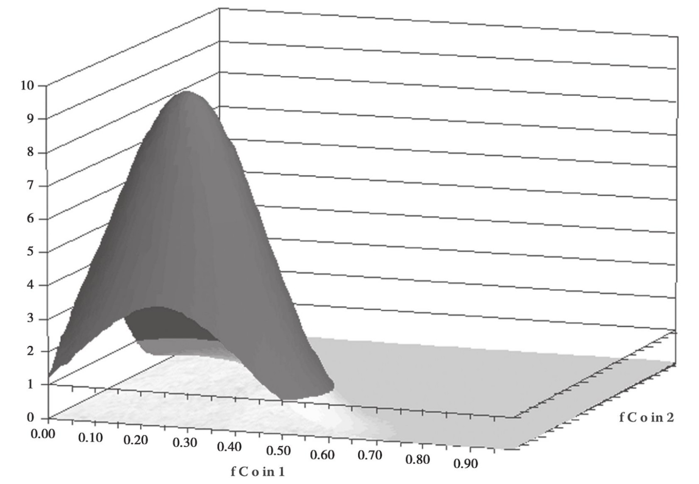
图B-6 2个同时进行的2∶1掷硬币游戏20轮后初始本金的预期增长倍数
LSP组合构建法可提供一些传统方法不能提供的信息。例如，在图B-6中，曲线峰值位于两个最优f值都为0.23处。然而请注意，如果我们降低一根坐标轴的值，会发生什么，比如当我们处于0.23、0.6处时，倍数（亦即图形的高度）会低于1。因此，即使资产组合中只有一个对象低于1（且仍不借钱建仓），我们也肯定会在持续交易中破产。在LSP组合中，分散化有助于降低风险的观念显然面临挑战，而这点在传统的组合构建法中看不出来。
当我们在市场上建立一个或更多仓位时，我们不可避免地处于杠杆空间中；而当我们调整股票仓位时，我们在杠杆空间中移动，在杠杆空间表面的各点上付出相应代价、获得不同回报。
因此可以通过一定的算法，构建穿越杠杆空间的不同路径，以达到与传统标准（最大化预期回报）不同的标准，比如达到预期的方差，或者甚至最大化预期增长（即处于表面的顶点）。利用LSP组合中穿越杠杆空间的路径，即穿越预期增长（初始本金倍数）表面的路径，我们现在能够为任何投资标准寻找解决方案。
[1] 此书中文版已由机械工业出版社出版。
[2] 此书中文版已由机械工业出版社出版。